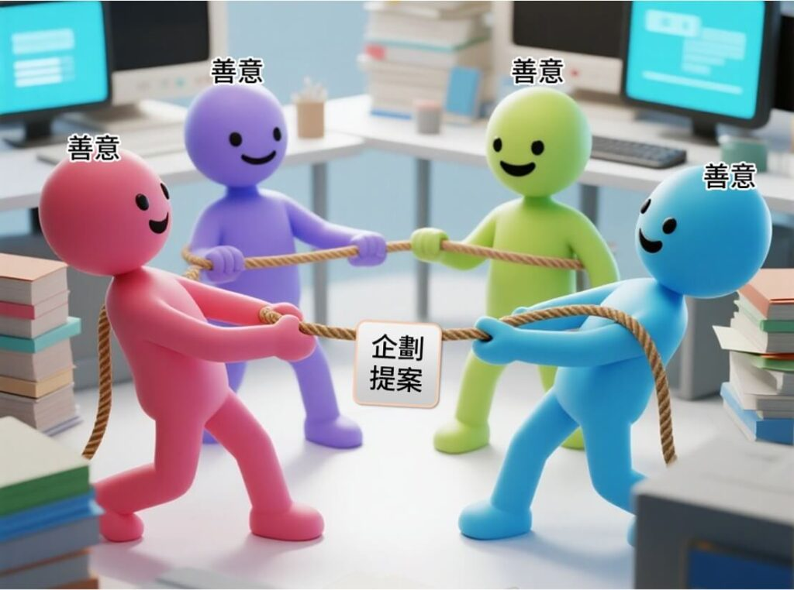
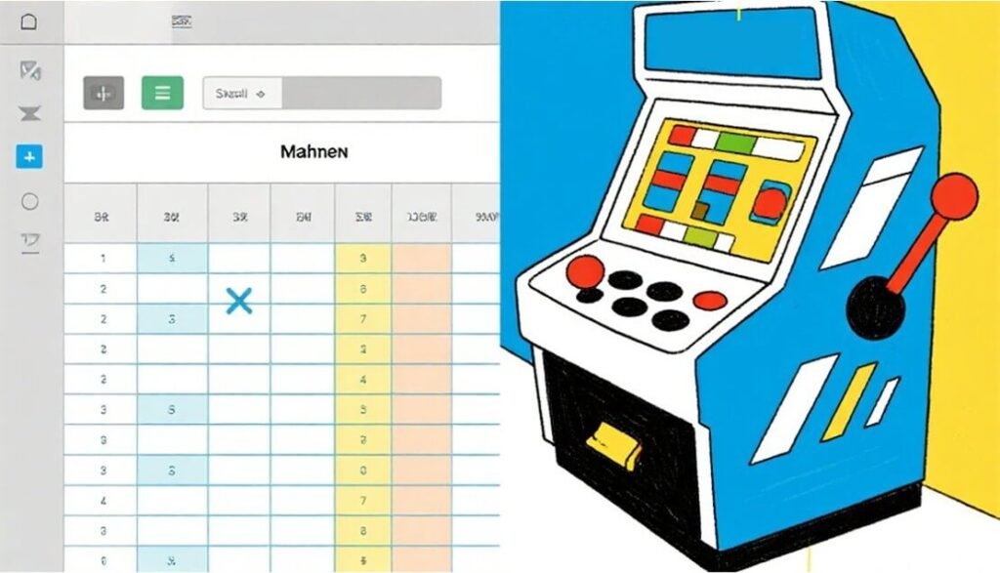
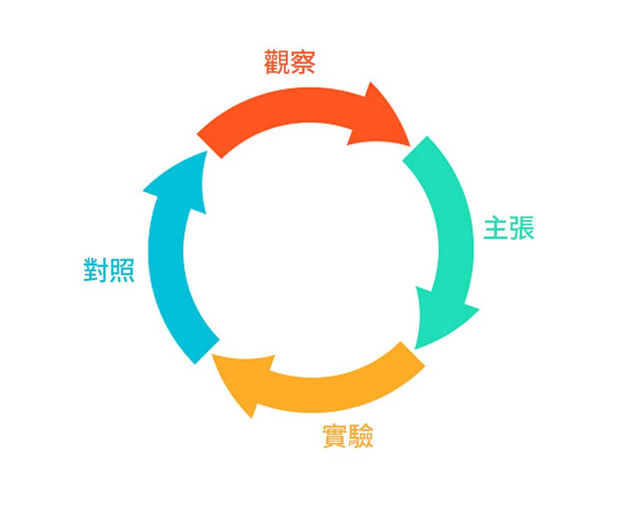
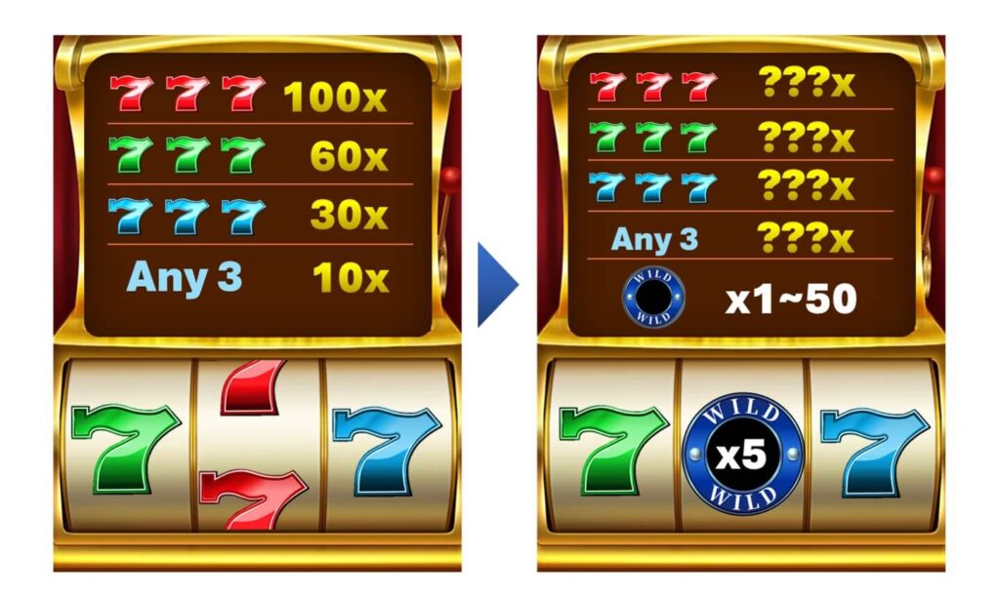

這天是晚輩要跟業務主管提案的日子。
一早，他就忐忑地檢視那份自己辛苦完成的精美提案。
我經過他，他回頭看到我，帶著一點僥倖問： 「提案前，一定要給機率工程師看過嗎？」
我看穿他的僥倖，懇切地回答： 「必須的！如果機率部門無法承接，好一點的會在會議上當面攔你；糟糕一點的，事後還是會回頭要求企劃改規則。不如先協調，問題少。」
這句話讓晚輩警鈴大作。他立刻放下僥倖，馬上找機率主管來討論。
機率主管看了晚輩的提案，面有難色，開始對特色東砍西修， 晚輩也被砍得面有菜色。
一度以為是機率在為難企劃，忍不住靠近聽，才發現真正的原因：
沒有估算遊戲的機率成本。
企劃擅長視覺，特色能做得符合潮流、也符合業務想要的噱頭，但 機率容易棄守，是新手最常踩的坑。
Slot 企劃需要懂機率嗎？
企劃也要做機率估算嗎？答案是肯定的。
企劃的工作是設計發包， 要想把自己的構想交給機率、美術、程式實踐， 也必須對這三個面向都有一定的「把關力」，因為這三方的「善意」建議，常會吞掉企劃的核心：
- 機率為了收斂，容易建議簡化甚至刪除規則
- 美術為了美感，有機會做出不符合玩家習慣的演出
- 程式為了風險，會砍動態與複雜互動

若企劃不具備基本理解力， 規劃好的核心會在一次次執行端「善意調整」中被吃掉， 最後遊戲不好玩，鍋也會回到企劃頭上。
之前我寫過圖標與節奏的主題， 說明企劃如何應對美術與前端。 那麼，面對機率時，又該怎麼辦？
問題是：大多數企劃並不會機率。 會機率的人，早就去當機率工程師了，薪水也更高。 留下來的，大多是視覺腦、流程腦、體驗腦的企劃。
那非數字導向的企劃，要如何掌握機率成本？
兩種 Slot 企劃估算機率流派：試算流 vs 排盤流
企劃的機率估算這件事，我把它分成兩派：
- 試算流
- 排盤流

試算流
絕對流簡單的說，就是「直接學機率工程師在做的事」
可以參考<Slot設計王>等教材，照著模仿一次試算流程。 哪怕做得不精準，哪怕卡到半途而廢： 如果剛好有天分的話，不小心還能轉職機率工程師呢! 雖然機會微乎其微，但在嘗試的過程中能知道 機率工程師的思考脈絡、 機率工程師的共通語言，能力限制與痛點
就算做錯或不完整，只要能完整模仿一次， 企畫在看待遊戲規則的角度，角度會完全不同。
如果環境與你的腦袋允許，強烈建議至少試算過一次。
排盤流
排盤流，則是以企劃擅長的具像化能力，實際排出盤面，來進行機率的粗估。這種估算法，是建構在企劃原本的流程上，不是額外拉看不懂的公式與試算表。
一般企劃設計一款遊戲，至少會經過三個步驟：
調研分析→優化改良→實驗測試
排盤流把這三步變得更具體。
排盤流：Slot 企劃一定能掌握的粗估法

步驟一｜調研分析 : 建立定盤基準
除了感受競品的痛點與癢點之外，
排盤流要求企劃必須額外抓三個東西：
- 競品的 PAYTABLE（配分表）
- 痛點盤面的截圖（讓玩家生氣想棄坑的）
- 癢點盤面的截圖（讓玩家魔性、想再轉一次的）
這三者是後續所有比較的基準。
步驟二｜優化改良：先改規則再談主題
企劃通常一開始就跑從主題、畫面來改良遊戲。
排盤流必須先忍耐：
先別想主題，把規則改穩。
所有測試都用競品主題下進行。 因為如果規則還在變動，每改一次規則都得重做 UI/UX， 容易變成長期內耗。
步驟三｜實驗測試 ：排盤、計分、比較、調整
排盤流最重要的核心：
用盤面，而不是用數學，來驗證規則是否合理。
流程如下：
- 新盤建構 把競品的痛點或癢點畫面，套入你改良後的規則
- 盤面計分 用同一份 PAYTABLE 計算新盤得分
- 盤面比較 新盤 vs 原盤，一對一比較
- 觀察與調整 看是否解決問題、不合理就再排一次
這整個過程，完全不需要計算 RTP、分布或 HIT RATE。
但因為是「盤面可視化」，所以非常直覺、非常接地氣，也非常能和機率部門溝通。
即使盤面算錯，至少能從這個盤面來做為溝通橋梁。
接下來會從最簡單的 1×3 遊戲 開始，一步步示範腦盤流的實際操作方式。只要理解 1×3，後續要做 3×3、5 Line、243 Ways，就能舉一反三。
排盤流 1×3 示範
以下示範「排盤流」在最簡單的 1×3 經典 SLOT 裡，如何實際運作。 選 1×3，是因為它最乾淨、最赤裸，不會讓企劃迷失在複雜視覺。

這款 遊戲有三種圖標 + 空白，共四種結果。企劃流程如下
一. 企劃調研：列出體驗核心、優缺點
試玩後，大概會記下兩個特點：
- 十次 SPIN 大約會有一次空白 → 中獎偏難。
- 中獎了也常常是最小雜分，但雜分是 10X：能回本甚至小賺。
接著，企劃通常會提出這款遊戲的體驗問題：
- 問題 1： 缺乏顯性特色，目前市場流行倍數顯樺。
- 問題 2： 都是在雜分中等大獎，有沒有手法讓雜分本身也有記憶點。
二. 解法發想 → 新增中輪倍數百搭
企劃看到問題後，可能會提出這個改善：
在中間滾輪加入「倍數百搭」。
預想可以帶來兩個效果：
- 顯化倍數比原競品更吸引人。
- 讓玩家覺得比較“好中”的感覺
三. 進入排盤流 → 用盤面驗證是否可行
步驟 1｜選常出盤面，改成百搭版
選常見得分：這款就是**任 3 圖標獲得 10X，**把中輪改成百搭示意。
步驟 2｜先設定百搭出現率與平均倍數
排盤流不需要精算，但要先有企劃的主張規則：
- 百搭出現率：設定 20%， 我用八二法則：80% 好印象來自 20%特色。
- 百搭平均倍數：設定5X。 企劃可以自己決定，我先用5X來做測試。
這有明確設定，就能開始排盤計算。
步驟 3｜計算新盤面的「粗略成本」
不用精算，只算「當下這盤」的成本感。
原本：
- 常見盤面得分 = 10X（100% 都是 10X）
現在加入百搭後：
- 80% 是原本的 10X
- 20% 是百搭的 5X
所以平均變成：
10×80% + 10×5×20% = 18X
玩家看到的「常見盤面」加入特色，成本將近翻倍囉。
步驟 4｜觀察與調整
問題 1：特色強到失控了嗎？
百搭 5X 讓成本變 180%。
建議在企劃能理解的範圍底下，成本押到最多 110%，就需要調整
因為我們的調整會連帶影響到高分賠付的波動， 需要留點空間給機率工程師精算收尾。
問題 2：哪些東西你想堅持？哪些能換？
假設這款遊戲你堅持：
- 要保留百搭平均 5X
- 要保持原本 1×3 的觸發率
我選擇降 PAY，當然你也可以依自己當時的考量降其他的東西。
二次實驗 ：PAY 砍對半後，再算一次
把「任意 3 個 = 10X」改為 5X。
重新算：
- 80% = 5X
- 20% = 5X × 5 = 25X
平均：
5×80% + 25×20% = 9X
成本只有原本 90%，再確定高低位置的副作用，大概就能實作 ， 但假如不想降PAY，讓玩家直覺這款比較有利呢?
假設我們把百搭倍數改為 2X，百搭觸發率 10%：
10×90% + 20×10% = 11X
→ 也有可能成立，但能見倍數下降是否有利，這要企劃自己選擇。
後面副作用檢查，則用降PAY這組的設定數字檢查。
副作用檢查：觸發率、施捨、空想
設定可以收斂再檢查這四件事：
(1) 平均得分觸發率是否下降？
這邊平均得分觸發率是控制變因，→ 目前沒被影響，安全。
(2) 小獎是否變「施捨」？
如果十場中一次，80% 獲得 5X，20% 獲得 25X 感覺像施捨嗎? 這沒有標準答案，變因也很多。 施捨感兩種來源：
- 假贏：贏分頻率不差，但得分 < 1X 太常出
- 利少：贏分頻率跟得分明顯不成比例 例如 平均10場中一次，感覺每次中獎 都是 2X，最多10X，看不到百倍的機會，就會有明顯利少感。
目前版本：
- 維持平均 10 場中一次
- 常見為 5X～25X
- 不會掉到 1X 以下
→ 不構成施捨。
(3) 大獎是否變從夢想變成空想？
原本最大獎：
- 100X，出現率 1/100
改完後可能變：
- 最大獎變 500X，但 100X 以上出現率變 1/500
- 玩家可能感受不出 1/100 → 1/500 的落差。
→ 這完全看企劃與團隊能接受的「利多」指標。
排盤流到這邊，有盤面有數字讓企劃作為依據與機率討論，而不是沒任何數字依據的空談。
企劃都應該排過一次盤
排盤流是建議企劃必學，且企劃能掌握的「務實粗估法」。
如果您的團隊規則是機率部門定的，企劃也應該每次自己排盤，也能讓自己的特色成功被實作。